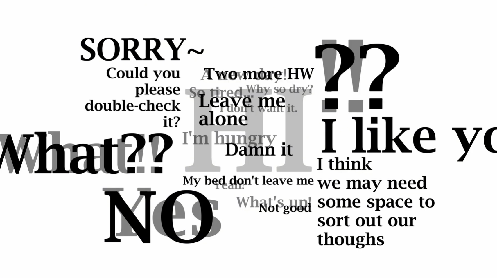

Come Again?
Interactive Installation/DMX controller/Illumination Art
Come Again is a light-reactive print that explores how meaning shifts depending on how something is revealed. At first glance, it appears simple, but under different colored lights, hidden layers of text emerge and overwrite each other.
The work reflects my curiosity about why people often say things that are not exactly what they mean, even when they could be direct. By using light as a filter, the piece turns communication into something unstable, where what is seen always depends on how it is illuminated.
